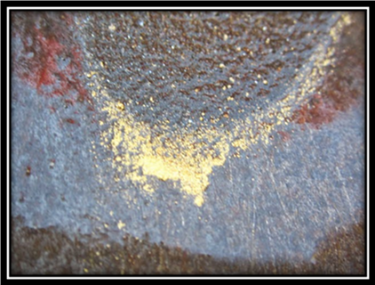
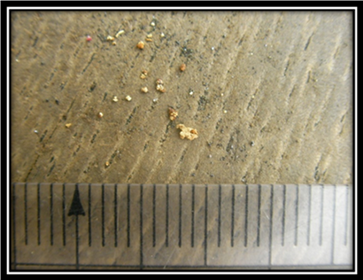
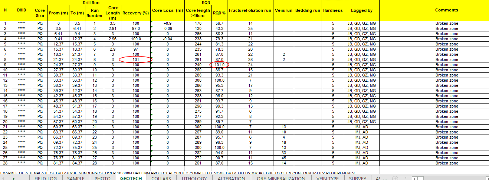
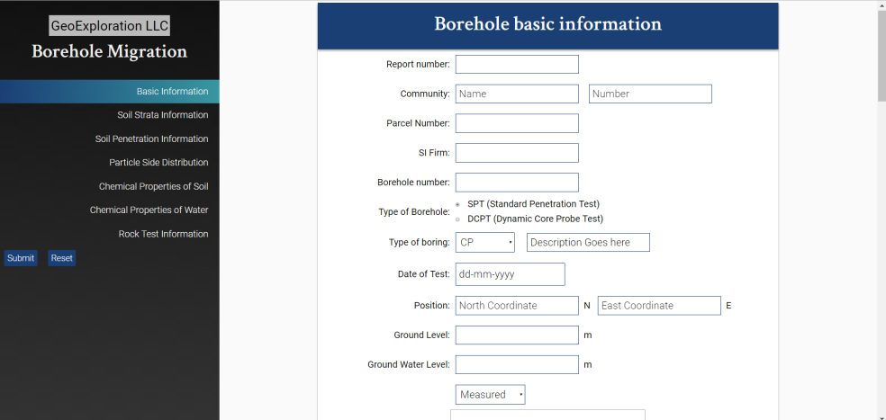

Technologies
Geology-Geophysics data integration
CAGE-IN:
Constrained Area Gridding for Enhanced Interpretation
- CAGE-IN technology enhances existing geophysical data
- Helps identify additional targets even in well explored areas
- Applicable is several mineral occurrences
- Demonstrated in porphyry, epithermal, skarn types
- Can be applied on pre-existing surveys as well as in conjunction with fresh acquisition
- CAGE-IN is an integrated interpretation and would work increasingly well if geological maps, soil/rock geochem data, structural maps, location of historical/ artisanal workings become available
Gold Proxy Index
-
Coarse – free gold deposits are a delight for metallurgy and highly profitable;
BUT - Gold nuggets have an erratic distribution and their point density gets very rare with increase in the median grain size – this makes it virtually impossible to estimate grade by drilling
- Regular statistical requirement is to increase sample size multifold, this becomes unviable after a certain depth.
- We have developed a statistical correlation model where the gold grade can be predicted using statistical models of structure, ore chemistry and pathfinders


Drill database corrections
- Common sources of error in drill database are data entry errors
- We have developed several multi level QA-QC routines that clean the drilling databases of errors by flagging locations of potential errors
- This results in clean data bases, ready for modelling flagging
- Data validation within defined ranges
- Comparing data records with 3 element and 5 elements averages of numerical data
- Comparing multiple entry of text data
- deviations are flagged for supervisory verification


Spectral Classification
- Proprietary image classification technology uses spectral signature to identify mineral prospects over very large areas.
- Using our proprietary know-how of image classification, we can identify the following on remote
sensor imagery:
- Works for regional prospect identification as well as high resolution targeting.
- Perfect for shallow mineralization with subtle superficial spectral signature.
- Has been successful in delineating targets for Cu-Au Porphyry, hydrothermal and lateritic mineralization.
- Works on the principle that mineralized bodies have identifiable spectral signatures and the geological anomalies associated with mineralization affect the surface bodies and vegetation.
Exploration Applications
- Potential mineral bearing areas within large prospects.
- Locate active mining areas, abandoned mining areas and artisinal mining areas.
Regulatory Applications
- Change in mining activities sites over time.
- Illegal mining activities or mining outside concession areas.